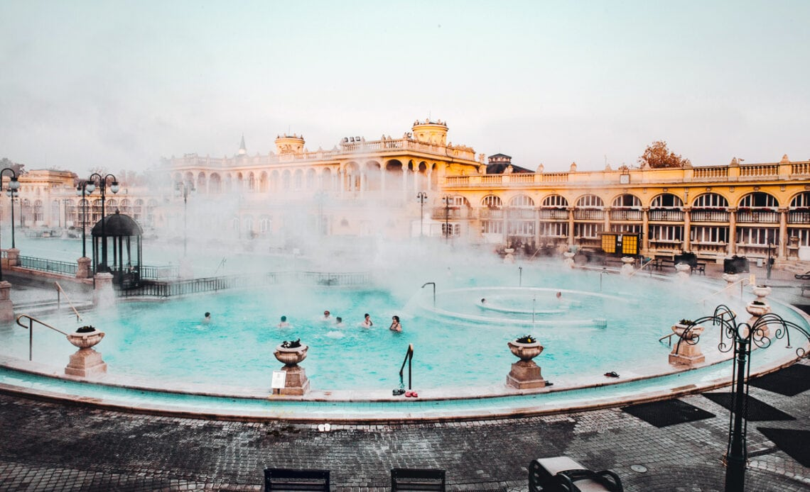

Paris

Paris, France
Eiffel Tower: The iconic landmark in the city, grab some friends and walk up the stairs for a breathtaking view or enjoy a picnic in the gardens.
Palace of Versailles: Visit Louis XIV's royal residence and take in the grand French and English architecture.
Louvre Museum: World's largest art museum and a historic momument in France located on the right bank of Seine.
Champs-Élysées: Visit for premier shopping, dining, and historic landmarks.
London
London, United Kingdom
Big Ben: Huge clock tower located in north end of London.
Palace of Westminster: Architectural masterpiece housing the UK parliament.
Hyde Park: Acres of greenery located in Central London. The perfect place to stroll with loved one's on a sunny day.
London Eye: An observation wheel on the South Bank of the River Thames in London with stunning views of the city.
Budapest
Budapest, Hungary
Széchenyi Thermal Bath: The largest medicinal bath in Europe with water sourced from two thermal springs.
Fisherman's Bastion: One of the most important tourist attractions due to the unique panorama of Budapest from the Neo-Romanesque lookout terraces.
Central Market Hall: A neogothic hall with groceries and souvenirs.
Buda Castle: The historical castle and palace complex of the Hungarian kings in Budapest.
Athens
Athens, Greece
Kalamaki Beach: Sunny beach perfect for getting your tan on.
Acropolis: Ancient citadel located on a rocky outcrop above the city of Athens with views of the historical city.
Plaka: Narrow cobblestone streets lined with tiny shops selling jewelry, clothes and local ceramics.
Parthenon: Former temple on the Athenian Acropolis. Dedicated to the goddess Athena.